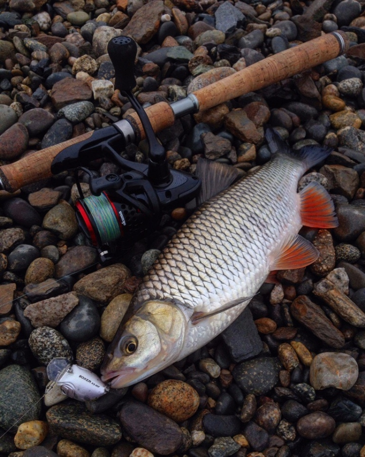
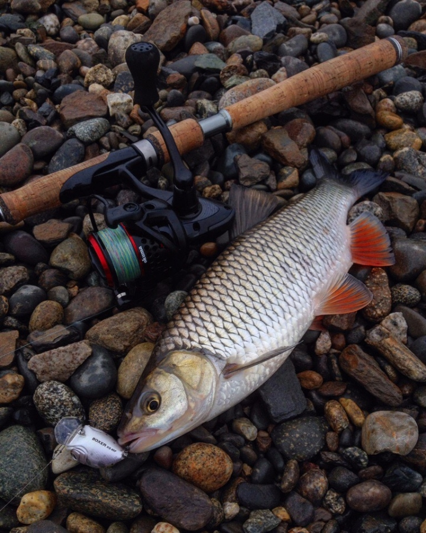
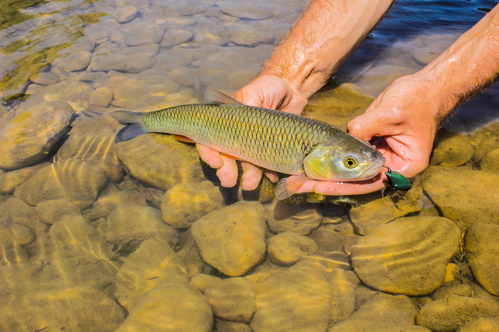
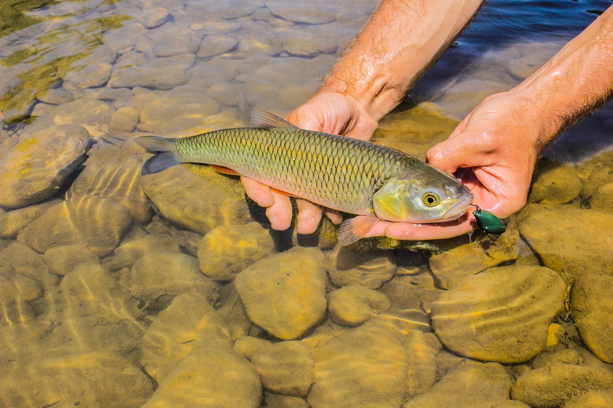

| Ловля головля | Спиннинг | Различные приманки |
|
Голавль - благородный рыб!
Голавль - рыба рыцарская благородная,красивая и сильная, карповая рыба,ведущая хищний образ жизни,но также питающаяся и растительным миром.
Осторожный голавль
Голавь очень осторожная и пугливая рыба. Он видит все,что творится на берегу. Так что, умение маскироваться будет не лишним.
Места обитания
Голавль чувствителен к чистоте, кислотности и кислородному насыщению окружающей среды, поэтому излюбленные места обитания вида – реки и в меньшей степени проточные озера, каналы. В пределах водоема прыгун выбирает участки с быстрым или умеренным течением, твердым днем (песок, камень, гравий, галька, глина), обрывистыми или заросшими кустами берегами. Рыба также предпочитает укромные уголки, чтобы устроить засаду или спрятаться от водоплавающих птиц и крупных хищников (щука, жерех, судак).
Гидротехнические сооружения являются еще одним перспективным местом, где можно встретить голавля. Он любит находиться возле опор мостов, прячась от сильного течения и собирая проплывающую мимо пищу либо атакуя малька. Также лобастый располагается в районе каменных и бетонных укреплений берегов, проживает возле плотин или разрушенных старых мельниц.
Что кушает голавль?
Голавль является всеядной рыбой. Он может питаться зелеными водорослями, семенами растений, зернами, ягодами и фруктами. Но основной пищей рыбы становятся личинки насекомых, пиявки, черви, личинки миноги, лягушата. Взрослые особи активно охотятся за молодью рыбы. Зимой голавль кормится придонными организмами, проявляя активность только в начале и конце зимы.
Снасти на головля
Для охоты за лобастым используют небольшие приманки, которые можно забросить и провести лишь легкими снастями. Зачастую применяют ультралайтовые или лайтовые комплекты, позволяющие эффективно управляться с невесомыми блесенками и воблерами.
Лучшие воблеры и блесны на головля
| Название | Характеристики | Примечание | Цена |
| Yo-zuriL-minnow | 44-мм,5 грамм,до 1.5 м | В середине приманки есть звонящие шарики | 400 руб |
| Pontoon 21 Red Rag | 36-мм,5.7 - 6.1 грамм, 0.2-1.2 м | Особенно хорош на быстром течении | 550-700 руб |
| Jackall Chubby 38 | 38-мм,4 грамма, 0.5-1 м | Универсал.Хорош везде и всегда | 650-750 руб |
| Вертушки MEPS | 00-1 размер | Бюджетная приманка | 100-200 руб |
| Tsuribito Baby Crank | 36-мм, 3.3 грамма,1.5-1.8 м | - | 400 руб |
Вас тоже пугают такие цены?
Есть замена на дешевые воблера.Наши китайские друзья с aliexpress изгатавливают также неплохие воблера.Парачка магазинов:
Подбор спиннига и катушки
Головля ловят не маленькие приманки 0.5-8 грамм,поэтому нам нужен ultralight спинниг Здесь,как и с воблерами есть бюджетные варианты и брендовые.Сперва разберем какими характеристиками он должен обладать
- ultralight - light
- быстрый строй
- Длина небольшая,1.6-2 м
- Легкая катушка 1500-2500 размера
- Он должен быть легким, ловля головля на спинниг - одна из самых изматывающих видов ловли
Black Hole Spy
Модель 1.80 м и тест 0.5-5 г за такую цену смотрится очень даже неплохо . Обычный бюджетный спинниг. Позволяет точно забрасывать и благодаря этой длине можно удобно передвигаться сквозь деревья и заросли
Okuma Ceymar - бюджетная катушка. Лучшая в своей ценовой категории. За цену всего в 2500 руб ее вес составляет 227 г(2500 размер)
Характеристики :
- Японская система фрикционов с промасленными войлочными дисками;
- Дополнительная алюминиевая шпуля
- Устойчивый к коррозии корпус из графита;
- Шариковых подгипников + 1 роликовый подшипник для непревзойденной плавности хода (6+1 в размере 10)
- 1000-ый размер 170 г,2500 - 227 г
- Компьютерная система балансировки ротора RES II;
Okuma Ceymar обладает всего одним минусом - глубокая шпуля. 2500-ый размер вмещается в себя целых 300 метров 0.15 лески
 

Совет!
Леска на катушке всегда должна быть намотана до краев,это позволит далекому и точному забросу приманки
Фотографии Александра Зенина с реки Белой:

 
